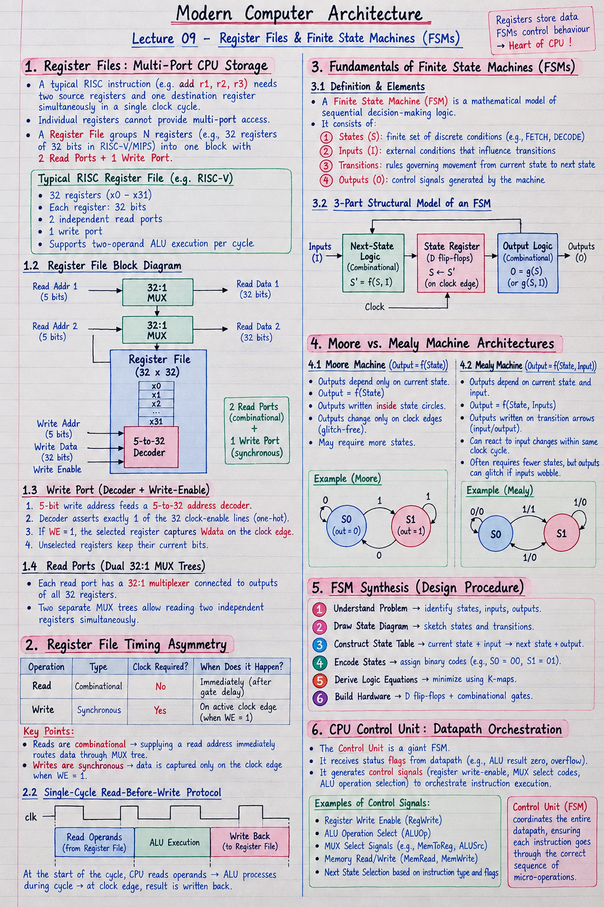

Short Notes & Visual Summary
Quick summary and key architectural rules for Lecture 09:
- Register File Architecture: RISC standard packs 32 registers (\(x0-x31\)) into 1 block with 2 Read Ports + 1 Write Port to support two-operand ALU execution per cycle.
- Timing Asymmetry: Register file reads are combinational (instant via MUXes, no clock needed); writes are synchronous (updates on clock edge via decoder + WE).
- Moore FSM: Output depends ONLY on current State (\(\text{Output} = f(S)\)). Output written inside state circles. Glitch-free.
- Mealy FSM: Output depends on current State AND Input (\(\text{Output} = f(S, I)\)). Output written on transition arrows. Faster reaction, uses fewer states.

Click image to open high-resolution version in new tab
Register Files: Multi-Port CPU Storage
1.1 Why Single Registers Don't Scale
A typical RISC instruction like add r1, r2, r3 requires reading two source registers (\(r2, r3\)) and writing one destination register (\(r1\)) simultaneously within a single clock cycle. Individual discrete registers cannot provide multi-port access.
A Register File groups \(N\) registers (e.g., 32 registers of 32 bits each in RISC-V/MIPS) into a single addressable storage block featuring 2 Read Ports and 1 Write Port.
1.2 Write Port (Decoder + Write-Enable)
The write port consists of a 5-bit Write Address input, a 32-bit Write Data bus (\(W_{\text{data}}\)), and a Write Enable (\(WE\)) signal:
- The 5-bit write address feeds a 5-to-32 address decoder.
- The decoder asserts exactly 1 of the 32 clock-enable lines (one-hot).
- If \(WE = 1\), the selected register captures \(W_{\text{data}}\) on the clock edge. Unselected registers keep their current bits.
1.3 Read Ports (Dual 32:1 MUX Trees)
Each of the 2 read ports consists of a 32:1 Multiplexer tree connected to the outputs of all 32 registers. Placing 2 separate MUX trees in parallel allows reading two completely independent registers at the exact same instant.
Register File Timing Asymmetry
2.1 Combinational Reads vs. Synchronous Writes
The single most important operational rule of a register file is its timing asymmetry:
- Reads are COMBINATIONAL: No clock signal is required for reading! Supplying a read address immediately routes data through the MUX tree after gate delay.
- Writes are SYNCHRONOUS: Writing requires a clock edge. Data is captured only when the active clock edge arrives while \(WE = 1\).
2.2 Single-Cycle Read-Before-Write Protocol
At the start of a clock cycle, the CPU combinationally reads operands from the register file. The ALU processes these operands during the cycle. At the end of the cycle (on the clock edge), the result is safely written back into the destination register—enabling safe, glitch-free single-cycle instruction execution.
Fundamentals of Finite State Machines (FSMs)
3.1 States, Inputs, Transitions, and Outputs
A Finite State Machine (FSM) is the universal mathematical model of all sequential decision-making logic. It consists of four core elements:
- States (\(S\)): A finite set of discrete conditions (e.g.,
FETCH,DECODE,EXECUTE). - Inputs (\(I\)): External conditions that influence transitions.
- Transitions: Rules governing movement from the current state to the next state.
- Outputs (\(O\)): Control signals generated by the machine.
3.2 The 3-Part Structural Model of Any FSM
Every hardware FSM is constructed from three distinct blocks:
- 1. Next-State Logic (Combinational): Computes next-state bits from current state + inputs.
- 2. State Register (Sequential): D flip-flops holding encoded state bits, updating on clock edge.
- 3. Output Logic (Combinational): Drives output signals from state (and inputs).
Moore vs. Mealy Machine Architectures
4.1 Moore Machine (Output = f(State))
In a Moore Machine, outputs depend solely on the current state:
- Outputs are written inside state circles on state diagrams.
- Outputs change strictly on clock edges (glitch-free).
- May require slightly more states than Mealy machines to solve identical problems.
4.2 Mealy Machine (Output = f(State, Input))
In a Mealy Machine, outputs depend on both current state AND current inputs:
- Outputs are written on transition arrows (e.g.,
input/output). - Can react to input changes within the same clock cycle.
- Often requires fewer states, but output can glitch if input signals wobble.
FSM Synthesis & CPU Control Unit
5.1 Step-by-Step FSM Design Recipe
Hardware engineers synthesize state machines using a standardized 6-step workflow:
- Understand Problem: Identify states, inputs, and output requirements.
- Draw State Diagram: Sketch state circles and input-triggered transition arrows.
- Construct State Table: Tabulate (Current State, Input) \(\to\) (Next State, Output).
- Encode States: Assign binary codes (e.g., \(S_0=00, S_1=01, S_2=10\)).
- Derive Logic Equations: Minimize next-state and output functions using K-maps.
- Build Hardware: Wire D flip-flops for the state register + combinational gates.
5.2 The CPU Control Unit: Datapath Orchestration
In a complete computer, the Control Unit is a giant FSM. It receives status flags from the datapath (ALU result zero, overflow) and generates control signals (register write-enable, MUX select codes, ALU operation selection) to orchestrate instruction execution.
Original PDF Notes
Below is the original PDF document for your reference: